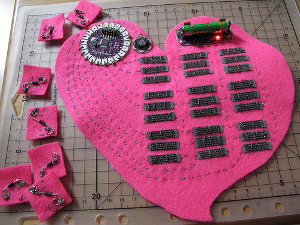

Glad you could make it!
May 22, 2012I am learning to talk to computers. It is a strange and beautiful process, and I feel like a super-human when I figure out how to fix things. Currently I'm working on a project for my fiance's mother, who works at a church. A church with a terribly-designed website. So terrible, in fact, that she asked me, a novice-web-design-wannabe, to make a new and better one.
The thing of it is, it's a lot of work to make a website from the bottom up! People who have been doing it for a while (Erik) know the quick ways to do things, and easy ways to see what needs to be changed in the code. But, it's a short walk down the path of endless divs until you reach the point of no-return in finding your mistakes.
To help me in my journey towards understanding HTML and CSS, Erik forwards me links and signs me up for emails with tips and info for new programmers. One really great thing he sent me was a website called Codecademy, where you walk through exercises to get you familiar with HTML, CSS, and Javascript, which is perfect if you're just starting and don't know your tush from your elbow in terms of websites. (I got through HTML and CSS, and slowly started to go crazy trying the Javascript section. So I'm saving that for later...)
Also, if you're a girl trying to get into coding, sign up for Skillcrush emails. They send you a word-of-the-day type of thing, with some interviews or special issues, and they're cute and fun. Check out this post on an arduino (which is a "Very Small Computer That You Can Make Do Neat Things") - it is a computer sewn onto felt! I'm telling you, I sort of want to make one now.
Now go out there and nerd-it-up!
About Me
I like to bake, sew, paint, make things, and design websites! I'm getting married this year, so there is a plethora of crafting in my life. I am newly transplanted in lovely California, where I try hard not to steal flowers from other people's gardens. Welcome to my website!